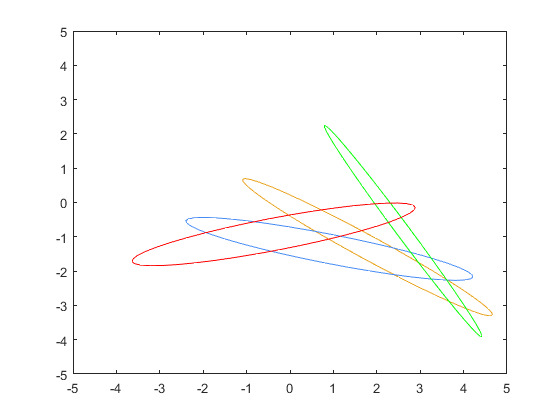

clc;
clear;
close all;
rng(0);
theta1 = [.3 .5 .7 1.1];
theta2 = [.3 .6 .8 .9];
a1 = 1;
a2 = 2;
v = length(theta1);
figure;
for i =1:v
J = [ (-a1)*sin(theta1(i))-(a2*sin(theta1(i)+theta2(i))),(-a2)*sin(theta1(i)+theta2(i)) ;
a1*cos(theta1(i))+a2*cos(theta1(i)+theta2(i)), a2*cos(theta1(i)+theta2(i))];
A = inv(J*J');
[V,D] = eig(A);
Dig(:,:,i) = diag(D);
t = 0:pi/20:2*pi;
X = cos(t) /sqrt(D(1,1));
Y = sin(t) /sqrt(D(2,2));
epsi(:,:,i) = inv(V')*[X;Y];
epsi(1,:,i) = epsi(1,:,i)+a1*cos(theta1(i))+a2*cos(theta1(i)+theta2(i));
epsi(2,:,i) = epsi(2,:,i) + a1*sin(theta1(i))-a2*sin(theta1(i)+theta2(i));
plot(epsi(1,:,i),epsi(2,:,i),'color', [rand rand rand]);
hold on
end
axis([-5,5,-5,5]);
[~,largest] = max(Dig(2,1,:));
[~,smallest] = min(Dig(2,1,:));
plot(epsi(1,:,largest),epsi(2,:,largest),'color', [0 1 0]);
plot(epsi(1,:,smallest),epsi(2,:,smallest),'color', [1 0 0]);
hold off
